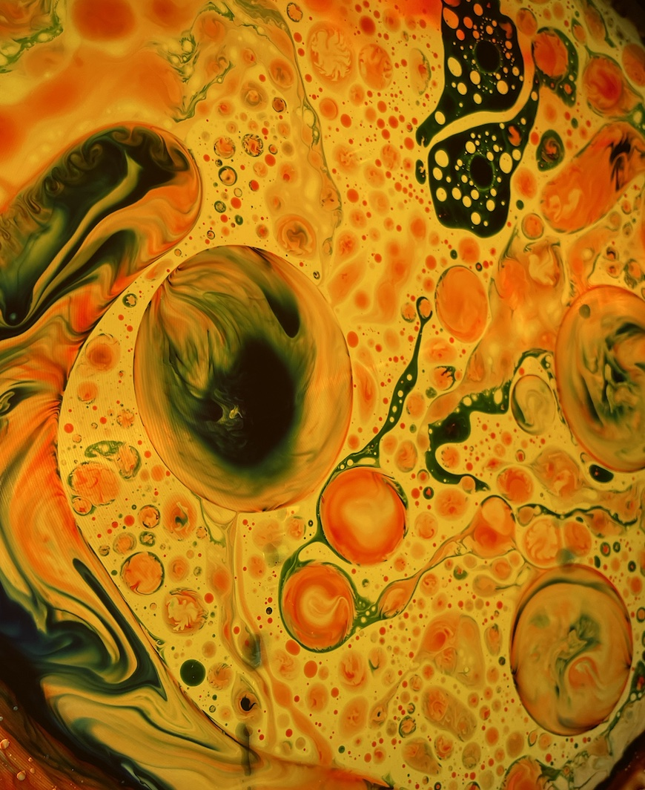
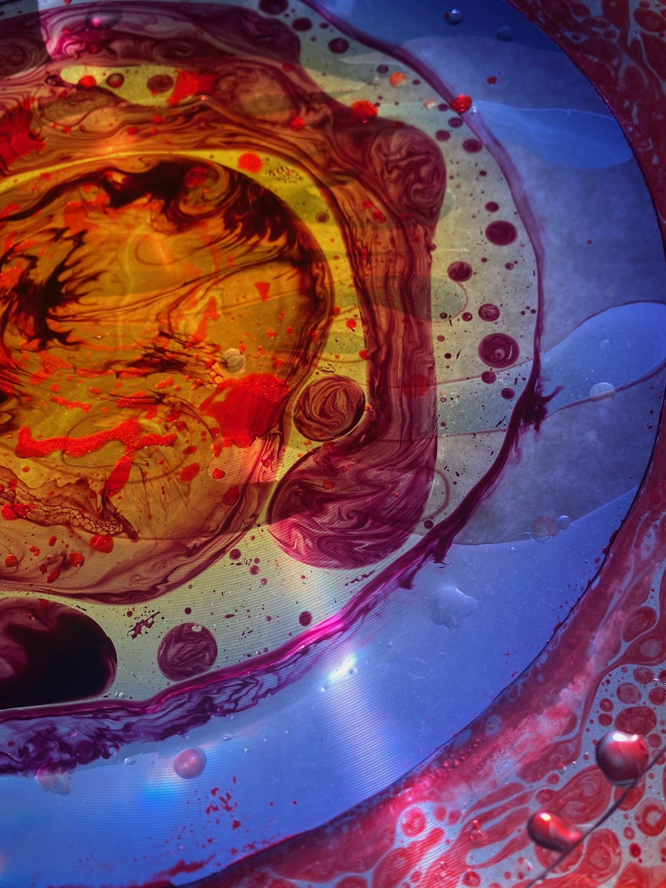
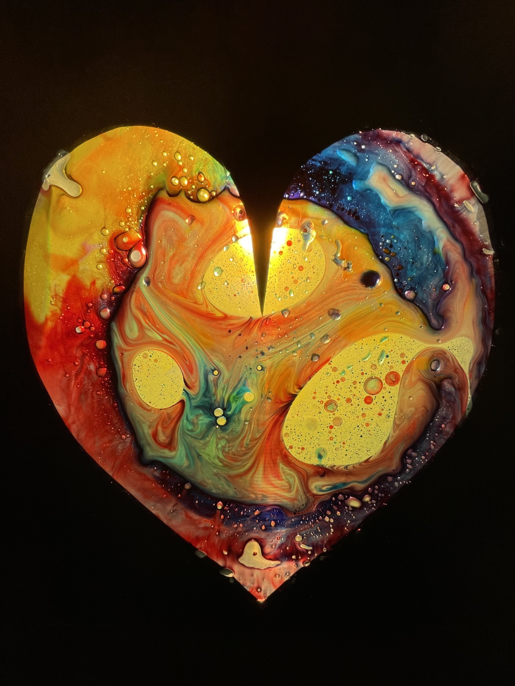
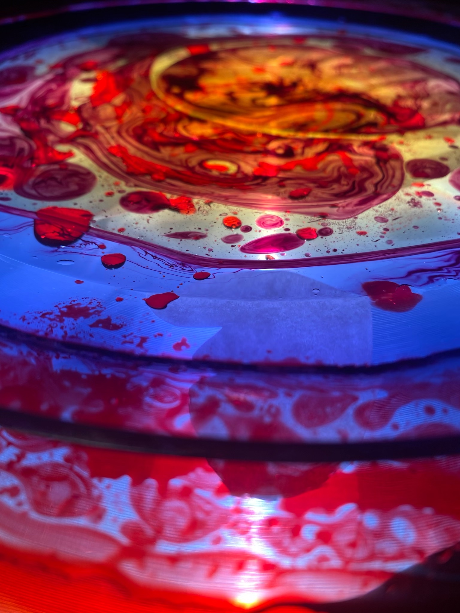

Liquid Dream Machine

Featured Collection



About the Artist Liquid Dream Machine
Liquid Dream machine is Isabella Benjey, a UX design student by day and liquid light show operator by night. An artist on a mission to challenge how we perceive common spaces by manipulating them with projections of light infused with color. Liquid Dream Machine conceives rooms meant to inspire and comfort the mind. She utilizes the traditional liquid light show materials to portray abstract landscapes that move symbiotically along with music. Isabella’s work is meant to muse reverie within the viewer's consciousness and allow the viewer to sail into their dreams.
Read More